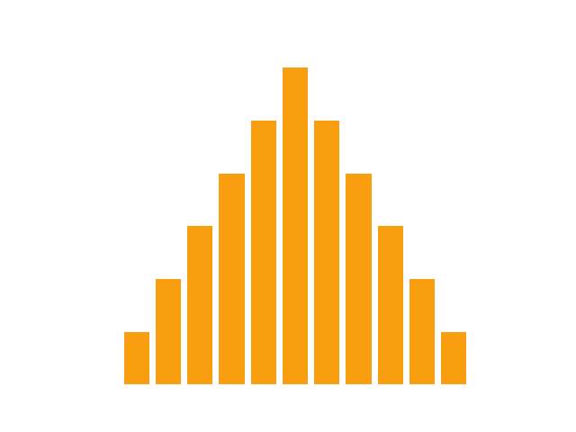
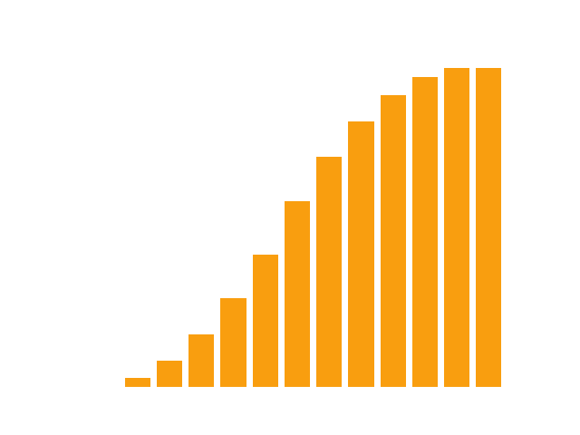

<!DOCTYPE html>
<html lang="en">

<head>
  <meta charset="UTF-8">
  <meta http-equiv="X-UA-Compatible" content="IE=edge">
  <meta name="viewport" content="width=device-width, initial-scale=1.0">
  <title>MTHE 224: Applied Math for Civil Engineers</title>

  <!--
    - favicon
  -->
  <link rel="shortcut icon" href="../../assets/images/pi_icon.ico" type="image/x-icon">

  <!--
    - custom css link
  -->
  <link rel="stylesheet" href="../../assets/css/style.css">

  <!--
    - google font link
  -->
  <link rel="preconnect" href="https://fonts.googleapis.com">
  <link rel="preconnect" href="https://fonts.gstatic.com" crossorigin>
  <link href="https://fonts.googleapis.com/css2?family=Poppins:wght@300;400;500;600&display=swap" rel="stylesheet">
</head>


<body>
    <main>

        <!--  #SIDEBAR   -->
        <aside class="sidebar" data-sidebar>
    
          <div class="sidebar-info">
            <div class="info-content">
              <h1 class="name" title="MTHE 224" >MTHE 224</h1>
    
              <p class="title">Applied Mathematics for Civil Engineers</p>
            </div>
    
            <button class="info_more-btn" data-sidebar-btn>
              <ion-icon name="chevron-down"></ion-icon>
            </button>
    
          </div>
    
          <div class="sidebar-info_more">
    
            <div class="separator"></div>
    
            <ul class="contacts-list">
    
              <li class="contact-item">
    
                <div class="icon-box">
                  <ion-icon name="mail-outline"></ion-icon>
                </div>
    
                <div class="contact-info">
                  <p class="contact-title">Email</p>
    
                  <a href="mailto:Tyler.meadows@queensu.ca" class="contact-link">tyler.meadows@queensu.ca </a>
                </div>
    
              </li>
    
              <li class="contact-item">
    
                <div class="icon-box">
                  <ion-icon name="location-outline"></ion-icon>
                </div>
    
                <div class="contact-info">
                  <p class="contact-title">Location</p>
    
                  <address>127 Jeffery Hall, Queen's University</address>
                </div>
               </li>
               <li class = "contact-item"> 
                <div class="icon-box">
                  <ion-icon name = "calendar-outline"></ion-icon>
                </div>
                <div class = "contact-info">
                  <p class = "contact-title">Lecture Times</p>
                  <time>Mon: 11:30-12:30</time>
                  <time>Tue: 13:30-14:30</time>
                  <time>Thu: 12:30-13:30 </time>
                </div>
              </li>
    
            </ul>

    
        </aside>


        <!-- Main Stuff -->
        <div class="main-content">
               <!-- #NAVBAR  -->
               <nav class="navbar">
    
                <ul class="navbar-list">
                    <li class ="navbar-item">
                        <a href="../lectures/lecture06.html" class = "navbar-link">Previous</a>
                    </li>
        
                  <li class="navbar-item active">
                    <a href="../MTHE224.html?page=lectures" class = "navbar-link">Lectures</a>
                  </li>
        
                  <li class="navbar-item">
                    <a href="../lectures/lecture08.html" class="navbar-link">Next</a>
                  </li>
        
                </ul>
        
              </nav>
              <!-- Lecture Content--> 
              
            <article class="lecture active" data-page="lecture">
                <header>
                  <h2 class="h2 article-title">Random Variables</h2>
                </header>
                <div class = "lecture">
                    <p>Up until now, we have been talking about events and outcomes 
                        in a fairly abstract way. Outcomes of experiments can be pretty much anything:
                        the colours of objects, the names of people, etc. In order to do some more 
                        satisfying mathematics, and eventually talk about statistics, we want to assign values to 
                        each outcomes in a sample space.
                    </p>
                    <p><b>Definition:</b> A random variable $X:\mathcal{S}\to\mathbb{R}$ is a function from the 
                        sample space of an experiment to the real numbers.
                    </p>
                    <p> This is really just another way of saying that for each outcome in a sample space, we assign a real number to it. We can then
                        define an event space by grouping the outcomes that have the same value together. Typically, we use the capital $X$ to refer to the
                        random variable in an abstract sense, and a lower case $x$ when we're referring to the values that the random variable takes. So if $E$
                        is an outcome in the sample space that we have assigned the value $x$, we would write $X(E) = x$.
                    </p>
                    <p><b>Example:</b> When flipping a coin, there are two possible outcomes: heads, $H$, and tails $T$. We can assign a value of $1$ to $H$, and a value
                        of $0$ to $T$. Then in this experiment we would have 
                        $$\mathcal{S} = \{H,T\}$$ and 
                        $$X(s) =    \begin{cases}  1 &\text{if}~s=H\\
                                                   0 &\text{if}~s=T.
                                    \end{cases} $$
                    </p>
                    <p> There are many reasons we might want to deal with random numbers rather than abstract events and outcomes. For example, 
                        we can put numbers in order, which is hard to do for things like colours. We can also add, subtract, multiply, and divide numbers,
                        which would be hard to do with names of people. 
                    </p>
                    <p> Random variables can be split into two types based on the values that they take. A random variable is called <u>discrete</u> if it can only 
                        take a countable number of values.  When we say that there are "a countable number of values",
                        this doesn't necessarily mean that there are a finite number of possible values, rather that we can come up with a method to start count all of them, even if we had
                        to take an infinite amount of time to do so. A random variable is <u>continuous</u> if it is not discrete.
                    </p>
                    <p> In most cases, there will be a correspondence between whether a quantity is measured or counted, and whether a random variable 
                        is continuous or discrete. You should be able to write the range of a discrete random variable as a list, or the start of a list, while
                        the range of a continuous random variable will have to expressed as an interval, or union of intervals. 
                    </p>
                    <p> <b>Examples</b>
                        <ul class="lecture-list">
                            <li> The random variable from the coin flipping example is discrete, since there are only two possible values, and we can count to two.
                            </li>
                            <li> The exact volume of water in a randomly chosen body of water is a continuous random variable, since we can't count volume. The volume can take on 
                                any value larger than $0$ liters. 
                            </li>
                            <li> Is the number of stars in the universe discrete or continuous?</li>
                        </ul>
                    </p>
                    <h2> Discrete Random Variables</h2>
                    <p>The intuition for dealing with discrete random variables is easier to develop than with continuous random variables, 
                    although the mathematics is a little harder. For each random variable, we can talk about its <u>distribution</u>,
                    which is a description of how the probabilities of each possible value are arranged. There are two main ways to do this for discrete random variables.</p>
                    <p><b>Definition:</b> The <u>probability mass function</u> (pmf) of a discrete random variable is the function $$f(x) = P(\{s\in\mathcal{S} ~|~ X(s) = x \}).$$
                         I.e., the probability that the random variable $X$ takes the specific value $x$.</p>
                    <p><b>Definition:</b> The <u>cumulative distribution function</u> (cdf) of a discrete random variable is the function 
                        $$F(x) = P(\{s\in\mathcal{S}~|~X(s) \le x\}).$$
                        I.e. the probability that the random variable $X$ takes any value less than or equal to a specific value $x$.
                    </p>
                    <p> <b>Example:</b> Consider an experiment where two dice are rolled, and let $X$ be the sum of the pips on both dice.
                        <ol class="roman">
                            <li>Find the pmf and plot it as a histogram.</li>
                            <li>Find and plot the cdf.</li>
                        </ol> 
                    </p>
                    <p><b>I.</b> As discussed in other examples, there are 36 possible outcomes for the roll of two dice.
                         There isn't exactly a nice closed form expression for the probabilities, but we can see that 1 outcome leads to a sum of 2, 2 outcomes lead to a sum of 3, and so on. 
                         The pmf is most easily summarized using a histogram or bar chart.
                        
                    </p>
                    <p><b>II.</b> Again, there will not be any nice closed form for the cdf, but we can find the value of cdf at $x$ by summing up the values of the pmf that are less than $x$. $$F(x) = \sum_{j = 1}^{x} f(j)$$
                    For example, if we want to know $F(4)$ we calculate
                    \begin{align}F(4) &= \sum_{j=1}^4 f(j)\\
                     &= f(1)+f(2)+f(3)+f(4)\\
                     &= 0+\frac{1}{36} + \frac{2}{36} + \frac{3}{36}\\
                     &= \frac{1}{6}.
                     \end{align} 
                    The cdf is also nicely summarized using a histogram or bar chart. 
                    
                    </p>
                    <h2> Exercises:</h2>
                    <ul class="lecture-list">
                      <li>Consider an experiment where a coin is flipped three times. Find and plot the pmf and cdf for the number of heads.</li>
                      <li>For each of the following random variables, determine whether it is discrete or continuous, and determine a possible range for the values.
                        <ol class="roman">
                          <li>The amount words in a randomly chosen book</li>
                          <li>The density of a randomly selected pine 2x4</li>
                          <li>The ratio of blue candies to the total number of candies in a randomly selected package of smarties</li>
                        </ol>
                      </li>
                    </ul>
                </div> 
                 
              </article>

        </div>
    </main>

    <!-- custom js link-->
    <script src="../../assets/js/script.js"></script>

    <!-- ionicon link -->
    <script type="module" src="https://unpkg.com/ionicons@7.1.0/dist/ionicons/ionicons.esm.js"></script>
    <script nomodule src="https://unpkg.com/ionicons@7.1.0/dist/ionicons/ionicons.js"></script>

    <!-- MathJaX-->
    <script>
        MathJax = {
          tex: {
            inlineMath: [['$', '$'], ['\\(', '\\)']]
          },
          svg: {
            fontCache: 'global'
          }
        };
        </script>
        <script type="text/javascript" id="MathJax-script" async
          src="https://cdn.jsdelivr.net/npm/mathjax@3/es5/tex-svg.js">
        </script>
</body>
</html>